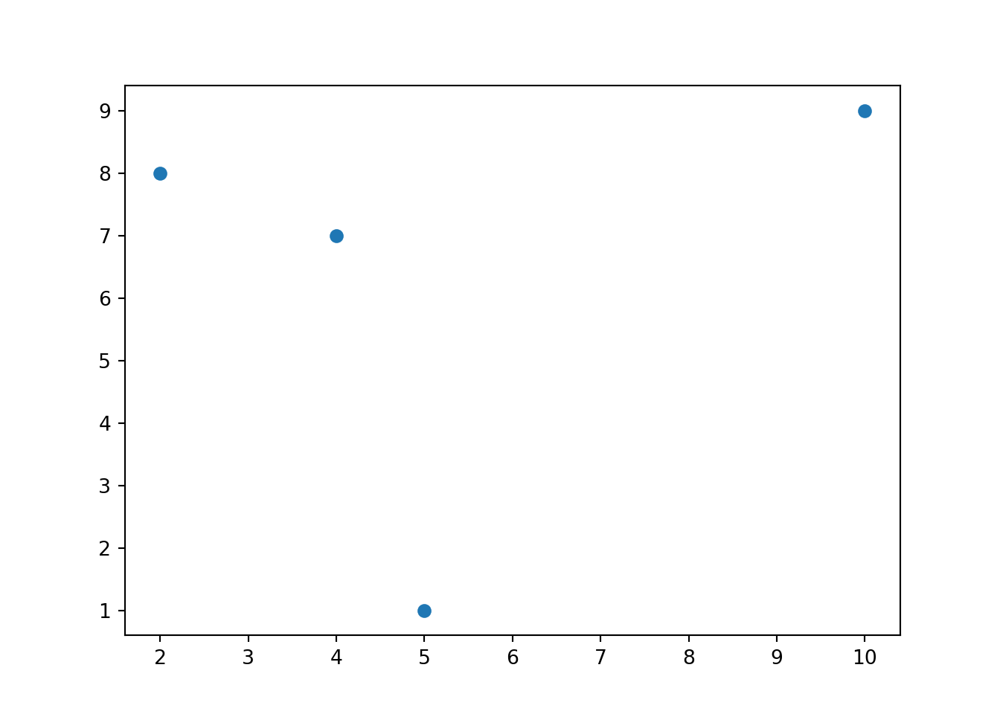
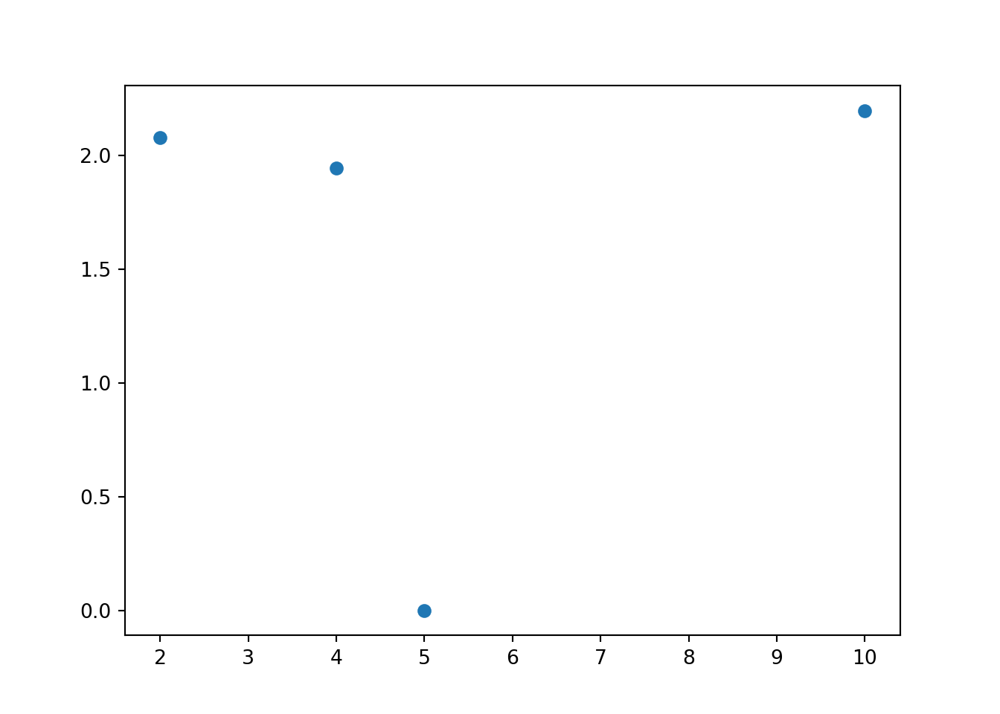
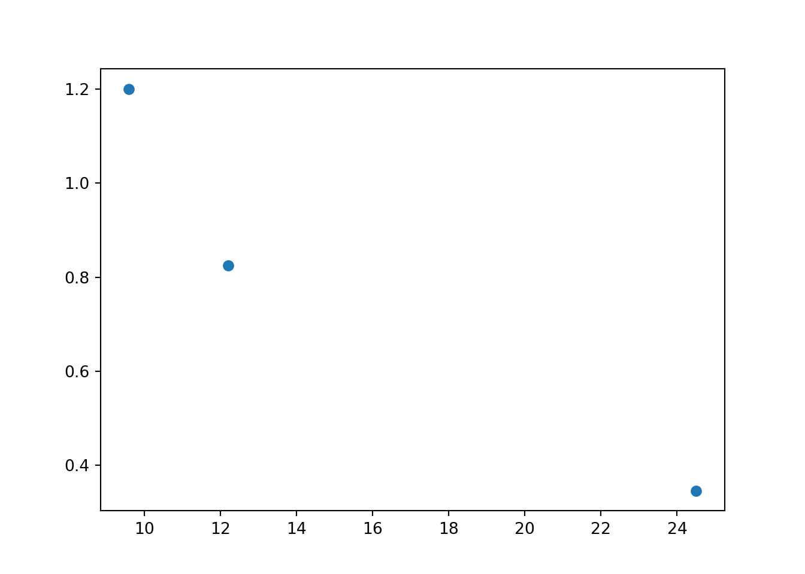
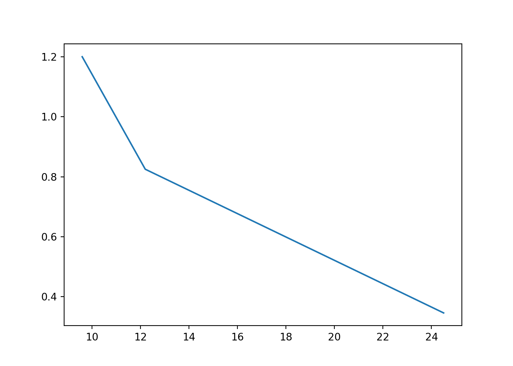
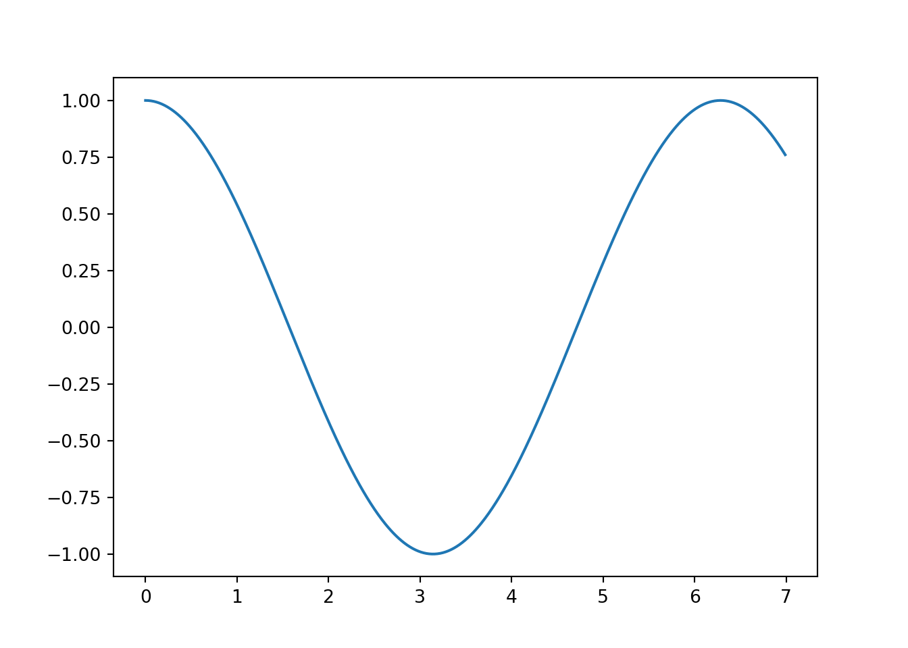
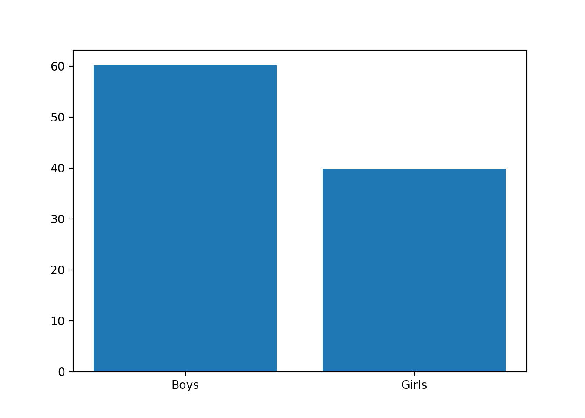
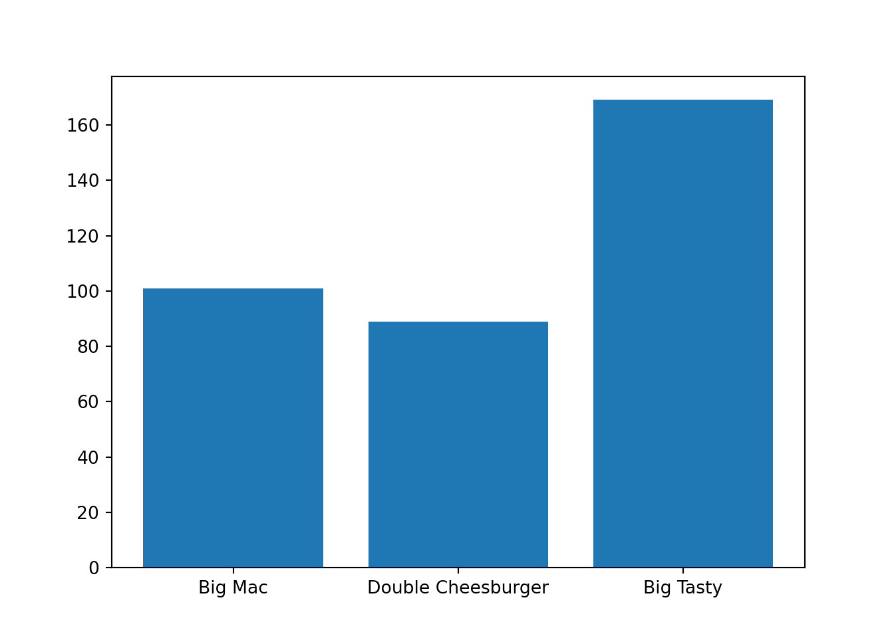

Глава 19 Візуалізуємо з matplotlib
⏱️ Час на опанування теми: 15 хвилин
🤷 Для чого ми це вивчаємо:
🔑 Результати навчання:
- Розуміння що таке програма, додаток та програмне забезпечення
- Розуміння що таке алгоритм, кодування та програмування
🎈 Увага: Наразі ця глава знаходиться у стані активної розробки і ймовірно буде змінюватись і доповнюватись!
У цій главі…
Візуалізація є чи не найголовнішою навичкою, коли ми говоримо про data science. Так склалося, що людина сприймає візуальні дані набагато краще ніж будь які інші, такі як текстові, наприклад. Візьмемо математиматику – щоб зрозуміти швидко ту чи іншу тему, ми завжди намагаємось її візуалізувати. Коли йдеться про фунцкію – то це графік функції, а геометрія – то ця історія взагалі про фігури, де без візуалізація нікуда. Навіть якщо ми візьмемо алгорітми, які ми обговорювали у Главі 11, то ми візуалізовували алгоритми за допомогою блок-схем.
Коли ми говоримо про візуальізацію, ми можемо мати на увазі багато різних речей: карти, 2-D (двовимірні) графіки, графіки у тривимірному просторі (3-D), візуалізацію мереж тощо. У цій главі ми поговоримо саме про двовимірні (2-D) графіки. Вони є найроповсюдженішими і мабудь не існує такого проєкту у data science який би не використовував принайні одну діаграму.
Python має багато пакунків для візуалізації, найвідоміший з яких є matplotlib. Він не найкрасивіший чи найзручніший, але для швидкої побудови графіків підійде. Тим паче він досить гнучикий. Ми розглянемо три типи графіків, без який, ну нікуди: точкові діаграми, діаграми ліній та стовпчикова діаграма. Ми навчимося будувати такі графіки, але у цій книзі ми не будемо фокусуватись на тому, як інтерпретувати такі графіки чи який саме графік нам треба побудувати. До речі, терміни “графік” і “діаграма” ми будемо використовувати поперемінно, так як вони мають приблизно одне й те саме значення.
Перед тим як використовувати пакунок matplotlib, його треба завантажити. В більшості випадків нам знадобиться тільки підмодуль pyplot, до якого ми використаємо псевдонім plt. Виглядати це все буде приблизно ось так.
import matplotlib.pyplot as pltКожного разу, коли нам знабодиться побудувати графік, код буде виглядати приблизно так:
plt.scatter(x, y)
plt.show()де:
plt.scatter()– фунцкія з ім’ям відповідного графіку, яка генерує об’єкт графіка.scatter()є однією з таких функції і ми також розглянемоlines()таbarh().xтаyвідповідні аргументи які зазначують значення на осі X та Yplt.show()– функція яка безпосередньо малює графік
Код для окремих графіків повинен міститися в окремих клітинках записника Goolge Colab. Коли ми виконаємо код, сам графік надрукується під відповідною клітинкою.
19.1 Точкова діаграма
Перший графік який ми розглянемо – це точкова діаграма. Будується цей графік у Декартовій системі координат. Якщо ви не пам’ятаєте що це таке, то просто згадайте як ви будуєте графіки фунцкій у школі. Ця система передбачає перепендикулярні осі X та Y.
Щоб побудувати цю діаграму, нам потрібні два спска – значення на осі X та значення на осі Y. При чому ці списки повинні мати однакову довжину. Елементи списків будуть утворювати пари чисел, які ми нанесемо на графік у вигляді точок. Тобто спочатку ми візьмемо перший елемент з першго списку, скомбінуємо його з першим елементом другого списку. Це утворить пару \((x, y)\) яка буде представляти точку на графіку. Так само для другого елемента, третього, і до останього.
Нижче ви можете подивитись як формуються ці точки у маленькому вбудованному додатку:
Щоб побудувати такий графік у Python, нам потрібно використати функцію plt.scatter(). Найважливішими аргументами є x та y, які містять значення для осі X та Y.
x = [4, 5, 2, 10]
y = [7, 1, 8, 9]
plt.scatter(x, y)
plt.show()
Змінні x та y не обов’язково повинні бути списками. Вони також можуть бути одновимирними масивами ndarray з пакунку NumPy, про які ми говорили у попередній главі. Попередній приклад, але з використанням NumPy масивів:
import numpy as np # не забуваємо завантажувати пакунок
x = np.array([4, 5, 2, 10])
y = np.array([7, 1, 8, 9])
plt.scatter(x, y)
plt.show()
Це буде дуже корисно, якщо ми нам треба виконати якусь математичну операцію, ну наприклад взяти логарифм від кожного елемента з масиву y:
x = np.array([4, 5, 2, 10])
y = np.array([7, 1, 8, 9])
y = np.log(y)
plt.scatter(x, y)
plt.show()
А ось більш конкретний приклад:
x– кількість лайків за останій пост в Інстаграмі українських кухарів (у тисячах)y– кількість підпісників (у мільйонах)
x = [9.6, 12.2, 24.5]
y = [1.2, 0.825, 0.346]
plt.scatter(x, y)
plt.show()
19.2 Діаграма лінії
Наступний графік який ми розглянемо – діагрма ліній. Ця діаграма в математиці представлена ламаною і досить схожа на точкову діагрму – ми теж будемо працювати з Декартовою системою координат. І так само, елементи списків чи масивів будуть утворювати пари. Проте замість того щоб позначати їх точками, ми просто зєднаємо їх прямими лініями. Не усі, а в порядку їх розташування у списку. Тобто точка утворена першою парою (x, y) буде з’єднанна з точкою утворенною другою парою. Потім друга точка буде з’єднана лінією з третьою, і так далі до останної точки. Остання точка не буде з’єднана з першою.
Подивитись, як формується така лінія ви можете у додатку унизу:
Для того щоб побудувати діаграму лінії, замість plt.scatter() ми використаємо фунцкію plt.plot(). Так само як і у plt.scatter(), нам треба зазначити два аргументи – x та y:
x = [9.6, 12.2, 24.5]
y = [1.2, 0.825, 0.346]
plt.plot(x, y)
plt.show()
Існує один трюк, який точно встане у нагоді. Іноді нам знадобиться побудувати графік якоїсь математчиної фунцкії, ну наприклад np.cos(), тобто фунцкії косинуса. Графік цієй фунцкії – крива. А ми вміємо будувати тільки прямі лінії :( Але ми зробимо невеличкий фокус – ми представимо цю криву як дуже багато прямих ліній. Таке представлення буде виглядати як крива і дасть нам змогу подивитись на загальну поведінку графіка.
Наприклад, нам цікаво як фунцкія себе поводить, коли x між 0 так 7. Ми можемо згенерувати 700 значень x і потім порахувати значення y у цих точках:
x = np.arange(0, 7, 0.01)
y = np.cos(x)Тепер ми використаємо нашу plt.plot() щоб побудувати 449 маленьких ліній між цими точками, які будуть виглядати майже як крива:
plt.plot(x, y)
plt.show()
Це може виглядати нудно, але в школі це дуже допомогало автору цієї книги, коли йому треба було швидко “прикинути” графік фунції.
19.3 Стовпчикова діаграма
Остання діаграма яку ми розглянемо – стовпчикова. Якщо елемент точкової діаграми є точкою, діаграм ліній – лінією, то логічно що елемент сповчикової діаграми буде стовпчиком. Цей стовпчик буде виходити зі значення із списку x, а його висота буде дорівнювати елементу зі списку y.
Подивитись, як формується такий графік ви можете у додатку унизу:
Так-так, ми казали що не будемо поглиблюватись у інтерпритацію графіків та для чого вони використовуються. Проте якщо для попередніх графіків це більш інтуітивно, у випадку стовпчикового давайте все ж подивимось. Зазвичай їх використовують щоб порівняти саме висоту стовпчиків. Висота може характеризувати, наприклад, кількість учнів в кожній з категорій (хлопчики та дівчата), або середній бал. Якщо б ми дивились на таблицю – то нам треба було трохи часу поки мозок обробив цю інформацію. У випадку ж графіка – це набагато швидше.
Давайте побудуємо такий графік за допомогою matplotlib. Аргументами фунцкії bar() (одне із перекладів з англійської, bar – це брусок або палиця) є x та y. У першому списку ми будемо містити значення на осі X, а в другому саме висоти цих стовпчиків, тобто значення на осі Y. Дуже часто елементами списку x будуть стрічки str, в який будуть міститися назви категорій. Коли Python побачить елементи, які є стрічками, то він розташує їх рівновіддаленими. Ось наприклад процент хлопчиків та дівчат у класі, візуалізований за допомогою стовпчикової діаграми:
x = ["Boys", "Girls"]
y = [60.1, 39.9]
plt.bar(x, y)## <BarContainer object of 2 artists>plt.show()
Або ціна на бургери у McDonald’s у гривнях:
x = ["Big Mac", "Double Cheesburger", "Big Tasty"]
y = [101, 89, 169]
plt.bar(x, y)## <BarContainer object of 3 artists>plt.show()